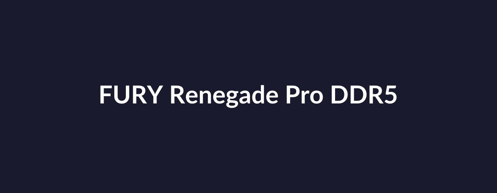
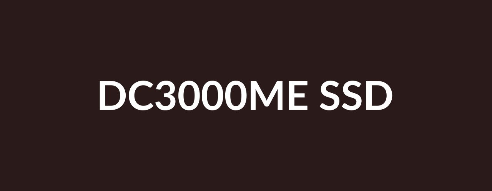
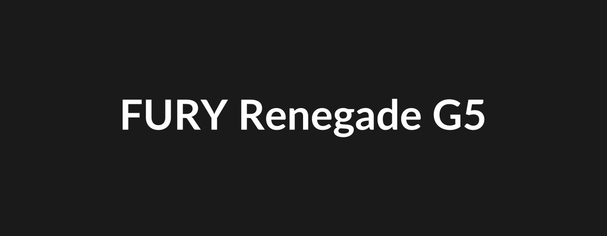

Heat dissipation solutions to keep your workstation running smoothly.

Enterprise Class Gen5 NVMe U.2 SSD with Power Loss Protection for Server Applications

For gamers, enthusiasts and high-power users seeking extreme performance
When you start with Kingston, choosing memory is easy.
With over 35 years of expertise, Kingston has the knowledge and resources you need to choose memory with confidence.
Simply enter the make and model number or system part number of the computer system or digital device to find the Kingston products you need.
Search by either the Kingston part number, distributor part number or manufacturer equivalent part number.